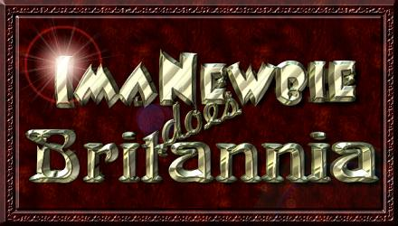

Realizing that splitting Britannia into Trammel and Felucca was not nearly enough to satisfy the thousands of players that have nothing better to do than to go on the Crossroads, Stratics and UO Vault boards and whine and complain about every facet of the game, our designers have gone back to the drawing board and come up with a solution that should satisy our players desires for an endless variety of gameplay styles. This manual is intended to help players decide in which of the new worlds they wish to live.
All original design and content is © Copyright 1998, 1999, 2000, Mike Hanley a.k.a. "Tryon" - As far as you using any of the stuff on this site without my express permission in writing, let me just say this: "DON'T!" ... Any material not expressely designed or created by me may be covered by copyrights and trademarks of their respective owners.